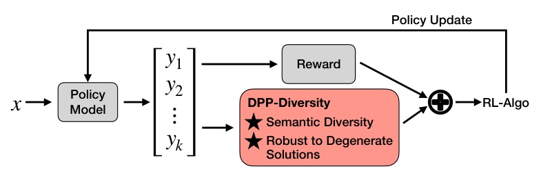
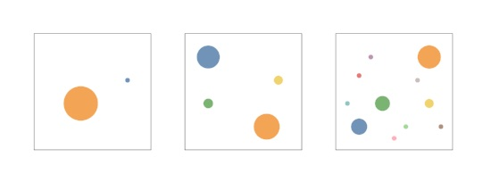
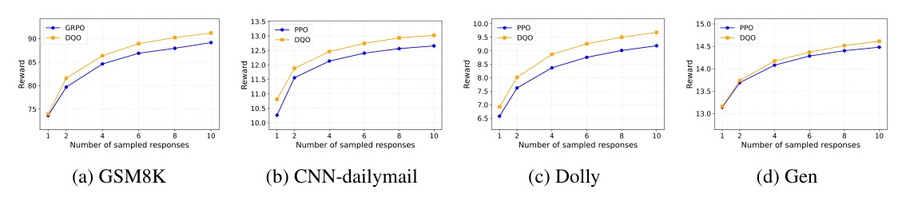
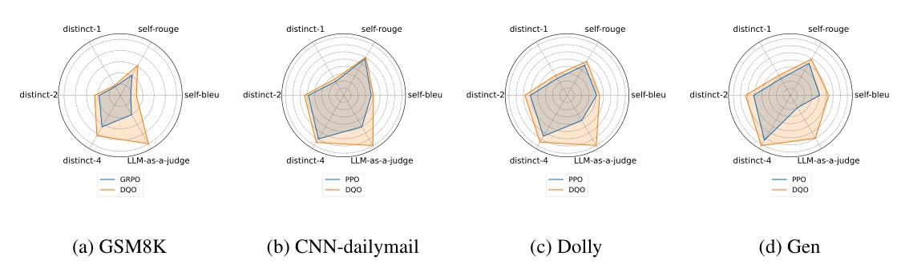
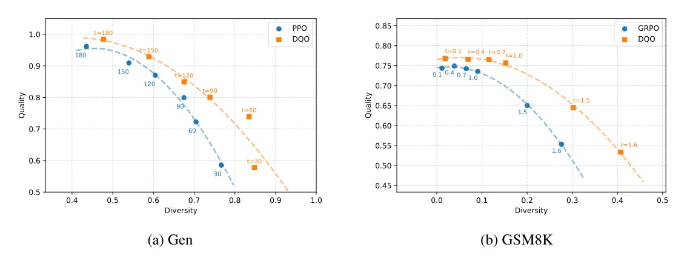

DQO 不是「把 temperature 調高」；它把多個 responses 的 semantic volume 放進 RL objective。
每個 prompt 取 k 個 responses，embedding 後用 kernel matrix determinant 衡量 group diversity；reward 控制向量長度，diversity 控制方向展開。

DQO 的核心不是 entropy，而是 volume under reward-weighted semantics。
高 reward 但語義重複，只會增加同方向長度；語義不同但低 reward，向量太短。能撐起 volume 的，是「高品質且方向分散」的一組 responses。
| Task | Base / RL | Quality | Diversity |
|---|---|---|---|
| GSM8K reasoning | Qwen2.5-MATH-1.5B + GRPO | pass@n / reward | distinct-n, 1-Self-BLEU/ROUGE, judge |
| CNN-Dailymail summarization | Llama3.2-1B + PPO | reward / pass@n | same metrics |
| Dolly instruction following | Llama3.2-1B + PPO | reward / pass@n | same metrics |
| CommonGen / Gen creative writing | Llama3.2-1B + PPO | reward / pass@n | same metrics |
Reward model: Skywork-Reward-V2-Llama-3.2-1B; embedding model: all-MiniLM-L6-v2.
| Task / Method | distinct-4 | self-rouge | pass@1 | pass@10 |
|---|---|---|---|---|
| Dolly · PPO | 0.64 | 0.49 | 5.65 | 8.39 |
| Dolly · DQO | 0.69 | 0.54 | 5.92 | 8.74 |
| GSM8K · GRPO | 0.32 | 0.21 | 76.8 | 87.9 |
| GSM8K · DQO | 0.42 | 0.31 | 76.3 | 91.2 |

| Method | Recommendation frequencies |
|---|---|
| GRPO | Tokyo 97; New York 3 |
| DQO-pairwise | New Orleans 48; Asheville 37; Budapest 8; Barcelona 7 |
| DQO-determinant | Budapest 45; Chiang Mai 22; New Orleans 19; Hanoi 7; plus 7 singletons |



| Dolly setting | distinct-4 | pass@1 | pass@10 |
|---|---|---|---|
| PPO baseline | 0.64 | 5.65 | 8.39 |
| alpha=1.0, k=4 | 0.69 | 5.92 | 8.73 |
| alpha=2.0, k=4 | 0.82 | 5.42 | 8.69 |
| k=8, alpha=1.0 | 0.79 | 5.64 | 8.64 |
| Dolly setting | distinct-4 | self-rouge | pass@1 | pass@10 |
|---|---|---|---|---|
| alpha=1.0, +0.1I | 0.96 | 0.86 | 3.44 | 6.38 |
| alpha=1.0, +0.5I | 0.83 | 0.66 | 6.72 | 8.90 |
| alpha=1.0, +I | 0.69 | 0.54 | 6.56 | 8.74 |
| Task | Baseline s/step | DQO s/step | Delta |
|---|---|---|---|
| Reasoning | 36.844 | 36.216 | ≈ same |
| Summarization | 34.826 | 34.463 | ≈ same |
| Instruction-following | 40.962 | 41.485 | +0.523s |
| Creative-writing | 20.963 | 22.462 | +1.499s |
如果你要做 LLM 產品，DQO 最適合「需要多解、多風格、多候選」的 post-training。
例如 creative writing、summary variants、recommendation, brainstorming, best-of-n reasoning。若任務只能用 hard outcome reward，先處理 reward hacking，再談 diversity objective。
The diversity score is then defined as the determinant of this matrix, which corresponds to the volume spanned by the response embeddings.
多樣性分數定義為相似度矩陣的行列式，也就是 response embeddings 張成的體積。§1 p.2 lines 101–105
The determinant is highly sensitive to the linear independence of the response vectors.
determinant 對 response vectors 的線性獨立性高度敏感，因此能懲罰 cluster 與低維退化。§3.1 p.4 lines 219–227
The reward acts as a scaling factor of the original semantic embedding.
reward 變成原 semantic embedding 的尺度因子，讓 quality 與 diversity 在同一幾何目標裡互相牽制。§3.2 p.5 lines 261–284
With only outcome reward provided, the model ... generate[s] some random or irrelevant contents to artificially increase diversity.
只用 outcome reward 時，模型會先答對，再加隨機或無關內容灌高 diversity。這是 DQO 目前最需要小心的失效模式。§4.2 p.7; Appendix G p.24
今天的結論：post-training diversity 不能只靠 sampling；如果 objective 讓語義空間坍縮，inference-time trick 只是補妝。